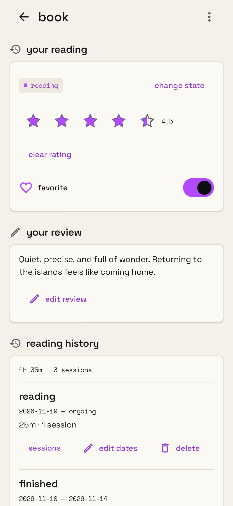
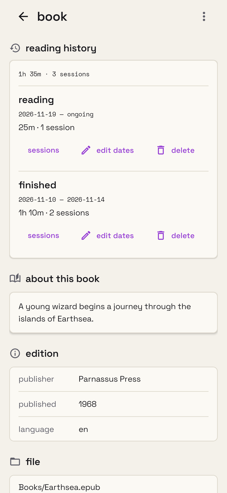
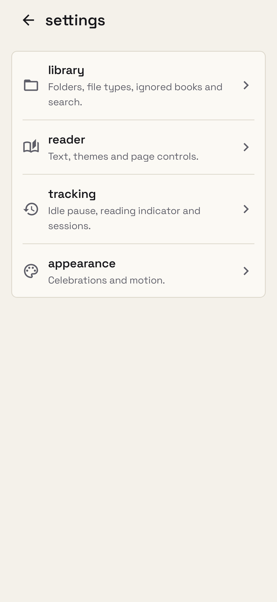
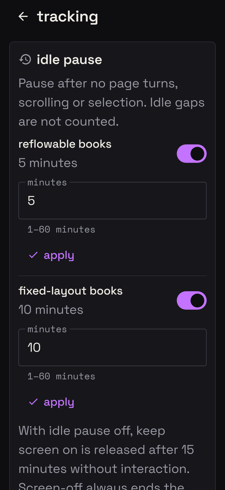
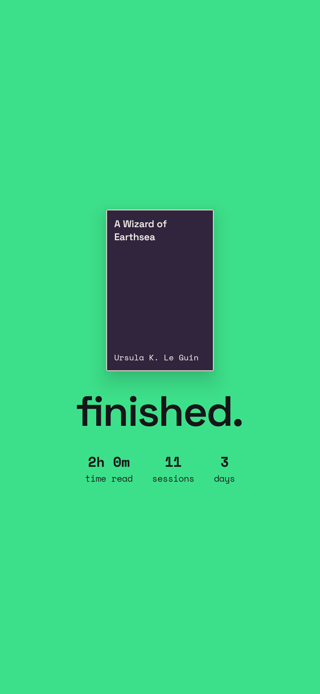

Deft 0.3.0
Reading history, assessments, tracking preferences and the finished-book flow. These are local Compose renders, not phone screenshots. Timing, gestures and haptics are covered by the M3 device checklist.
Accepted M2 visual reference
Book history and assessment

Grouped state, rating, favorite, private review and read-through history.
 Large text with scrollable rating targets and wrapped content.
Large text with scrollable rating targets and wrapped content.

Separate attempts with dates, recorded sessions and focused history actions.
 History actions wrap at large text. Browsing sessions remain accessible but are excluded from totals.
History actions wrap at large text. Browsing sessions remain accessible but are excluded from totals.
Tracking preferences

Tracking and Appearance join the existing settings categories.

Separate idle controls for reflowable and fixed-layout books, plus the optional tracking indicator. Fixed-layout readers arrive in M7.
 The finish animation has a persistent switch and follows Android's animation preference.
The finish animation has a persistent switch and follows Android's animation preference.
Finished-book flow

One frame of the short finish animation. Tap to skip, or wait for the rating sheet.
 Quiet mode uses the rating sheet directly; it also follows Android's disabled-animation setting.
Quiet mode uses the rating sheet directly; it also follows Android's disabled-animation setting.